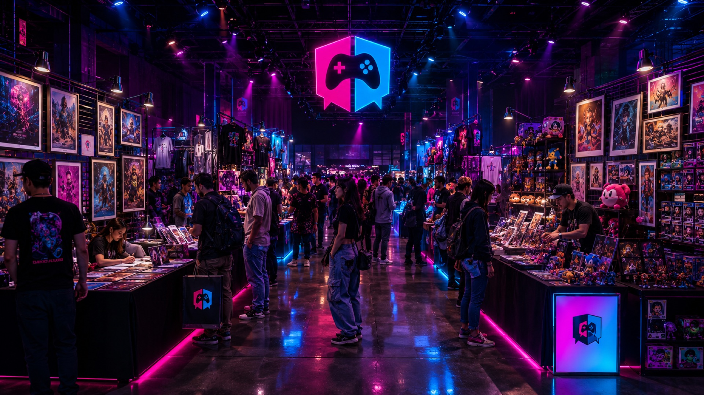
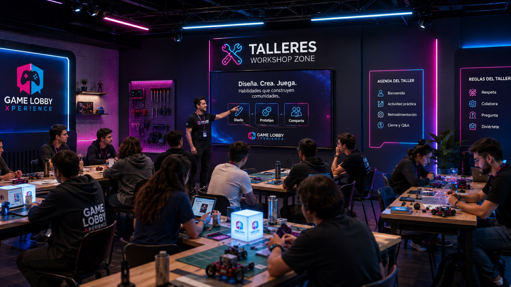
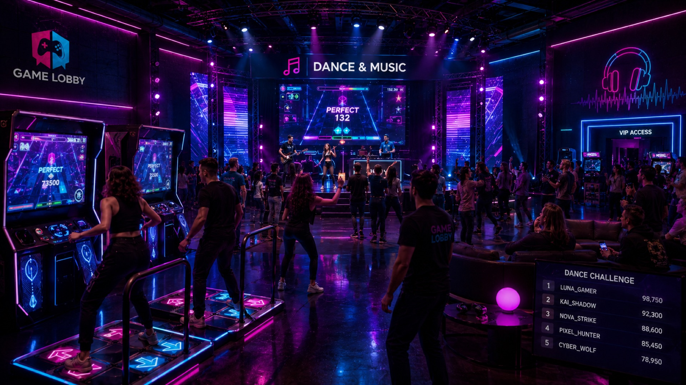
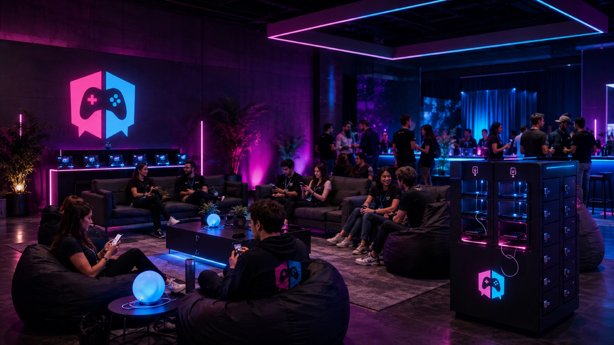

GAME LOBBYXPERIENCE
AGOSTO DE 2027
SPONSOR MEDIA KIT · PROPUESTA
Formato, sede y condiciones comerciales por confirmar.
Diseñamos propuestas de participación integradas al recorrido del visitante. Cada interacción podría convertirse en misión, contenido o recompensa, según el alcance técnico que se apruebe. Es un concepto propuesto.
Competición, Rooms y comunidad. Lanzamiento previsto en octubre de 2026.
Recompensas y participación. Despliegue progresivo previsto entre octubre y noviembre de 2026.
La experiencia presencial del ecosistema, prevista para agosto de 2027.
Talento, educación e innovación. Empresas, universidades e instituciones podrían patrocinar acceso para estudiantes y conectar con STEM, becas y empleabilidad.
Un videojuego en tamaño real. El público participa: juega, compite, descubre, prueba, vota y comparte.
Una jornada propuesta para estudiantes, universidades, empresas e instituciones alrededor de carreras STEM, gaming, tecnología, becas y talento joven.
La gente no llega a ver una exposición de marcas. Llega a participar. Estos son los verbos que guían el diseño.
Shows, contenido y premiaciones.
Retos, leaderboards y premios.
Fútbol, comunidad y fan experience.
Gaming móvil, producto y pruebas.
Cosplay, cultura pop y foto social.
Contenido, entrevistas y meet & greet.
Juego casual y permanencia.
Misiones, QR y recompensas, si se aprueba su alcance.




Podemos acordar indicadores de participación agregados o con consentimiento, según la activación y los permisos aplicables. Es un potencial de medición: no garantizamos resultados.
Estamos explorando que creadores y comunidades amplifiquen cada activación hacia lo digital: contenido, nominaciones y votaciones antes, durante y después.
Presencia protagonista y asociación cultural.
Registros y comportamiento medible, con consentimiento.
Sampling, demos y promociones.
Creadores, cosplay, streaming y comunidad.
Campus Quest, STEM, becas y empleabilidad.
La participación de tu marca puede comenzar desde una integración puntual y escalar hacia una presencia protagónica. No es un tarifario de stands: es una escalera de integración comercial.
Integración compartida para marcas que quieren probar la experiencia sin apropiarse de una zona completa.
Participación dentro de una experiencia específica con misión, recompensas y métricas de interacción.
La marca se apropia de una zona con naming, challenge propio, sampling y presencia destacada.
Presencia transversal física y digital, creadores y reporting premium.
GameLobby Xperience presented by [Marca]. Máxima visibilidad, integración regional y derechos principales.
Presencia en una experiencia · Branding en la activación · Misión, QR o premio (si se aprueba su alcance) · Contenido social · Métricas básicas de participación.
Naming de zona o experiencia · Activación llave en mano · Challenge propio · Captación de contactos · Presencia relevante.
Presencia física y digital · Creadores y contenido dedicado · Reporting · Hospitality según alcance · Momentos especiales de marca.
Misiones y QR (según alcance) · Premios y recompensas · Challenges · Pantallas · Sampling · Influencers · Meet & greet · Contenido social.
Algunas categorías podrían contar con exclusividad, sujeta a disponibilidad y cierre comercial. Ninguna está asignada.
Protege la inversión de la marca frente a competidores de su categoría dentro de la experiencia.
Solicita una propuesta para tu marca. El siguiente paso es definir objetivo, experiencia, nivel de participación y recorrido de activación. Formato, sede y condiciones comerciales se detallarán en la propuesta.